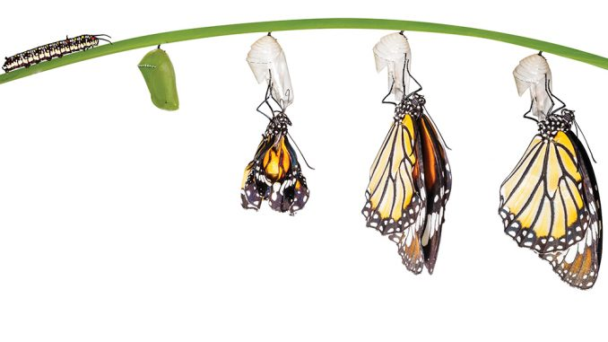

Dişi kelebekler, bitkilerin yapraklarına veya dallarına küçük yumurtalarını bırakırlar. Her tür kelebeğin yumurtası, bitkisine göre farklı şekillerde olabilir. Yumurtaların içinde, minik tırtıllar gelişmeye başlar. Yumurta dönemi, kelebeklerin yaşam döngüsünün ilk aşamasıdır ve birkaç gün sürebilir.
Yumurtadan çıkan tırtıl, kelebeğin ikinci aşamasıdır. Bu aşamada tırtıl hızla büyür ve sürekli beslenir. Bitki yapraklarını yiyerek büyür ve bir dizi deri değiştirme (gelişim evreleri) geçirir. Bu evre birkaç hafta sürebilir. Tırtıllar bu süreçte oldukça aktiftir ve bir sonraki evreye hazırlık için bolca enerji depolarlar.
Tırtıl yeterince büyüdüğünde, kendini korumak için bir koza ya da krizalit oluşturur. Bu aşamada kelebek, tırtıldan tamamen farklı bir yapıya dönüşür. İçten içe metamorfoz (başkalaşım) geçirir ve kanatları, antenleri, gözleri gibi yetişkin bir kelebeğin vücut yapıları oluşur. Bu aşama, kelebeğin en hareketsiz olduğu dönemdir ve birkaç hafta sürebilir.
Son aşama olan yetişkin kelebeğin krizalitten çıkmasıyla başlar. Kelebek, kanatlarını açarak kurutur ve uçmaya hazır hale gelir. Yetişkin kelebekler artık üreme dönemine girerler ve bu döngüyü baştan başlatırlar. Yetişkinlik aşaması, türüne göre birkaç hafta ya da ay sürebilir. Bu dört aşama, kelebeğin doğuş ve yaşam döngüsünün temelini oluşturur.
